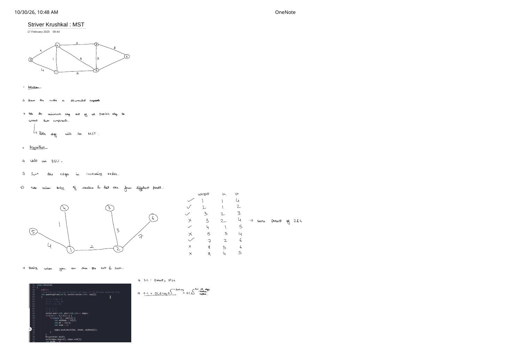

Kruskal's MST Algorithm (Striver) via Edge Sorting & Disjoint Set Union (DSU)
Expanded from handwritten competitive coding study note: 04_Striver_Krushkal_MST.pdf (Pages 1–2) · View original handwritten pages
1. Intuition & The 2-Step DSU Algorithm
Instead of growing a single tree outward from a starting vertex like Prim's Algorithm, Kruskal's Algorithm (1956) treats all $V$ vertices initially as $V$ completely disconnected singleton components and merges them using the globally cheapest edges first:
Kruskal's Greedy Rule
- Sort all edges $(w, u, v)$ in non-decreasing order of weight $w$.
- Iterate through the sorted edges using a Disjoint Set Union (DSU) structure:
- If
ds.findUPar(u) != ds.findUPar(v)($u$ and $v$ belong to different connected components), adding $(u, v)$ cannot create a cycle! Add $w$ tomstWt, record $(u, v)$ inMST, and merge viads.unionBySize(u, v). - If
ds.findUPar(u) == ds.findUPar(v), $u$ and $v$ are already connected by cheaper edges—adding $(u, v)$ would close a cycle, so skip it!
- If
2. Complete 9-Edge Dry Run on the 6-Vertex Graph
Page 1 of 04_Striver_Krushkal_MST.pdf traces a 6-vertex, 9-edge weighted undirected graph ($V = \{1, \dots, 6\}$). Compare the full input graph on the left with the 5-edge MST sculpted by DSU on the right:
04_Striver_Krushkal_MST.pdf: every cycle-forming edge ((2,4)=3, (3,4)=5, (3,6)=8, (4,5)=9) is rejected in $\mathcal{O}(\alpha(V))$ time by findUPar.| # | Weight | Edge $(u, v)$ | findUPar(u) vs. findUPar(v) |
Decision | Connected Components After Step |
|---|---|---|---|---|---|
| 1 | 1 |
(1, 4) |
1 != 4 |
✓ Accept (sum = 1) |
{1, 4}, {2}, {3}, {5}, {6} |
| 2 | 2 |
(1, 2) |
1 != 2 |
✓ Accept (sum = 3) |
{1, 2, 4}, {3}, {5}, {6} |
| 3 | 3 |
(2, 3) |
1 != 3 |
✓ Accept (sum = 6) |
{1, 2, 3, 4}, {5}, {6} |
| 4 | 3 |
(2, 4) |
1 == 1 (same ultimate parent!) |
✗ Reject (cycle 1-4-2-1) |
{1, 2, 3, 4}, {5}, {6} |
| 5 | 4 |
(1, 5) |
1 != 5 |
✓ Accept (sum = 10) |
{1, 2, 3, 4, 5}, {6} |
| 6 | 5 |
(3, 4) |
1 == 1 |
✗ Reject (cycle 1-4-3-2-1) |
{1, 2, 3, 4, 5}, {6} |
| 7 | 7 |
(2, 6) |
1 != 6 |
✓ Accept (sum = 17) |
{1, 2, 3, 4, 5, 6} ($V - 1 = 5$ edges!) |
| 8 | 8 |
(3, 6) |
1 == 1 |
✗ Reject | {1, 2, 3, 4, 5, 6} |
| 9 | 9 |
(4, 5) |
1 == 1 |
✗ Reject | {1, 2, 3, 4, 5, 6} |
Early Exit Optimization
As soon as we accept $V - 1$ edges (at Row 7 above!), all $V$ vertices already belong to a single connected component—every remaining edge in the sorted list is guaranteed to have findUPar(u) == findUPar(v), so we can break immediately!
3. Full C++ & Python Implementations (DSU + Kruskal)
Note a small implementation detail from Striver's code screenshot: when flattening an undirected adjacency list adj[] into edges, every undirected edge $\{u, v\}$ appears twice—once as $(w, u, v)$ and once as $(w, v, u)$. Even if you push both copies, Kruskal's algorithm stays 100% correct because DSU merges $(u, v)$ on the first copy and immediately rejects $(v, u)$ on the second! Adding a simple if (u < adjNode) guard avoids storing and sorting the duplicate half altogether:
// Kruskal's MST Algorithm with Disjoint Set Union (Path Compression + Union by Size) — C++
class DisjointSet {
vector<int> parent, sz;
public:
explicit DisjointSet(int n) : parent(n + 1), sz(n + 1, 1) {
iota(parent.begin(), parent.end(), 0);
}
int findUPar(int node) {
if (node == parent[node]) return node;
return parent[node] = findUPar(parent[node]); // Path compression
}
bool unionBySize(int u, int v) {
int ulp_u = findUPar(u);
int ulp_v = findUPar(v);
if (ulp_u == ulp_v) return false;
if (sz[ulp_u] < sz[ulp_v]) swap(ulp_u, ulp_v);
parent[ulp_v] = ulp_u;
sz[ulp_u] += sz[ulp_v];
return true;
}
};
class Solution {
public:
int spanningTree(int V, vector<vector<int>> adj[]) {
vector<tuple<int, int, int>> edges;
for (int u = 0; u < V; ++u) {
for (const auto& it : adj[u]) {
int v = it[0];
int wt = it[1];
if (u < v) { // Push each undirected edge once!
edges.emplace_back(wt, u, v);
}
}
}
// Step 1: Sort edges in non-decreasing order of weight — O(E log E)
sort(edges.begin(), edges.end());
// Step 2: Greedily merge distinct DSU components — O(E * alpha(V))
DisjointSet ds(V);
int mstWt = 0, taken = 0;
for (auto [wt, u, v] : edges) {
if (ds.unionBySize(u, v)) {
mstWt += wt;
if (++taken == V - 1) break; // Early exit once tree is complete!
}
}
return mstWt;
}
};# Kruskal's MST Algorithm — Python
class DSU:
def __init__(self, n: int):
self.parent = list(range(n + 1))
self.size = [1] * (n + 1)
def find(self, x: int) -> int:
while self.parent[x] != x:
self.parent[x] = self.parent[self.parent[x]] # Path halving
x = self.parent[x]
return x
def union(self, u: int, v: int) -> bool:
ru, rv = self.find(u), self.find(v)
if ru == rv:
return False
if self.size[ru] < self.size[rv]:
ru, rv = rv, ru
self.parent[rv] = ru
self.size[ru] += self.size[rv]
return True
def kruskal_mst(V: int, edges: List[Tuple[int, int, int]]) -> Tuple[int, List[Tuple[int, int]]]:
"""edges: list of (weight, u, v)"""
dsu = DSU(V)
mst_wt = 0
mst_edges = []
for wt, u, v in sorted(edges):
if dsu.union(u, v):
mst_wt += wt
mst_edges.append((u, v))
if len(mst_edges) == V - 1:
break
return mst_wt, mst_edges4. Detailed Time & Space Complexity
- Extracting edges from adjacency list (if not already an edge list): $\mathcal{O}(V + E)$.
- Sorting $E$ edges: $\mathcal{O}(E \log E)$.
- Iterating over $E$ edges with DSU
findUPar+unionBySize: $\mathcal{O}(E \cdot 4\alpha(V)) \approx \mathcal{O}(E)$, where $\alpha(V) \le 4$ is the inverse Ackermann function. - Total Time Complexity: $\mathcal{O}(E \log E) + \mathcal{O}(E) = \mathbf{\mathcal{O}(E \log E)}$.
- Space Complexity: $\mathcal{O}(E)$ for the
edgesvector + $\mathcal{O}(V)$ for DSU'sparentandsizearrays $= \mathbf{\mathcal{O}(V + E)}$.
From the Handwritten Notes
Expand the original handwritten pages below to inspect the exact derivations, dry runs, and annotations:
View original note — Striver Kruskal's MST: Disconnected Component Intuition, 9-Edge DSU Trace & Complexity (Page 1)


(2, 4) due to same parent, $\mathcal{O}(E \log E) + \mathcal{O}(E)$ complexity, and C++ edge extraction.